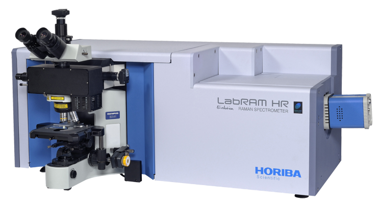
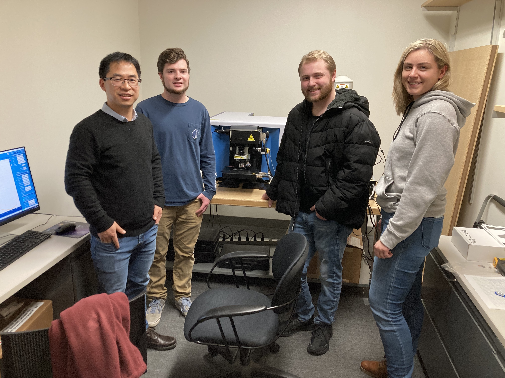
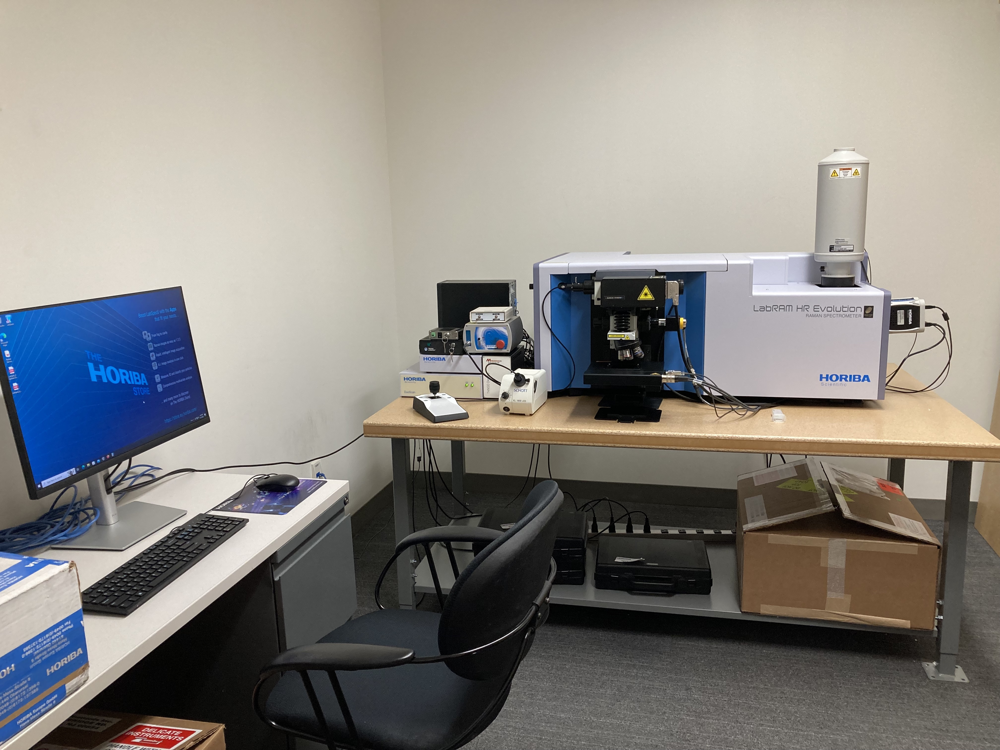
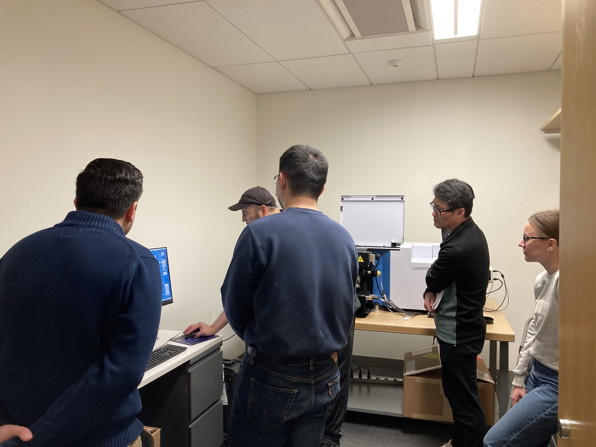

Raman spectrometer at Oakland University
Horiba Labram Raman spectrometer
|  | Address Room 361, Engineering Center 115 Library Dr, Rochester, MI 48309 Contact: Dr. Ankun Yang, ankunyang@oakland.edu Co-PIs: Dr. Xiangqun Zeng, Dr. Wei Zhang, Dr. Luis Villa Diaz, Dr. Ziming Yang |
Capabilities
- Confocal Raman microscopy (with scanning capability) and spectroscopy
- Laser sources: 532 nm, 633 nm and 785 nm
- Objectives: 5x, 10x, 50x, 100x VIS, 50x LWD, 50x NIR
- Gratings: 300, 600, 1800 gr/mm
- Deep cooled EMCCD, front illuminated UV CCD
- Photoluminescence (PL) measurement in the visible to NIR (up to 2000 nm, 50x NIR objective included)
- Heating and freezing stages (micro thermometric cell working from -196 to 600 deg C)
- Electrochemical cell with 2 and 3 electrodes and optical window (50x long WD objectives included)
- Ultra-Low Frequency Raman Filter (down to ~5-10 cm-1)
- Polarized Raman kits in the visible
- More information here
Manuals for Users (Also on the Raman computer desktop )
Acknowledgement
National Science Foundation: Division of Materials Research (DMR)
Oakland University: School of Engineering and Computer Science, Department of Chemistry, Department of Physics, Department of Biological Science
Please acknowledge NSF DMR-2216076 in your publications.
Publications
- Pragadeesh Venkatesh, et al. In preparation.
- Yuejian Wang, et al. Submitted.
News
Nov 27-28, 2023 Raman is going into undergraduate class ME 3700!
|  |
Apr 21, 2023 Raman is up running!
|   |
Apr 18-21, 2023 The Raman instrument is being set up!
August 9, 2022 Our MRI proposal for acquiring a confocal Raman microscope/spectrometer to support multidisciplinary research at OU is awarded by NSF. Thanks to NSF and the univeristy for the generous support! Thank all co-PIs and participants in this proposal!
We acknowledge the support from NSF
|
|